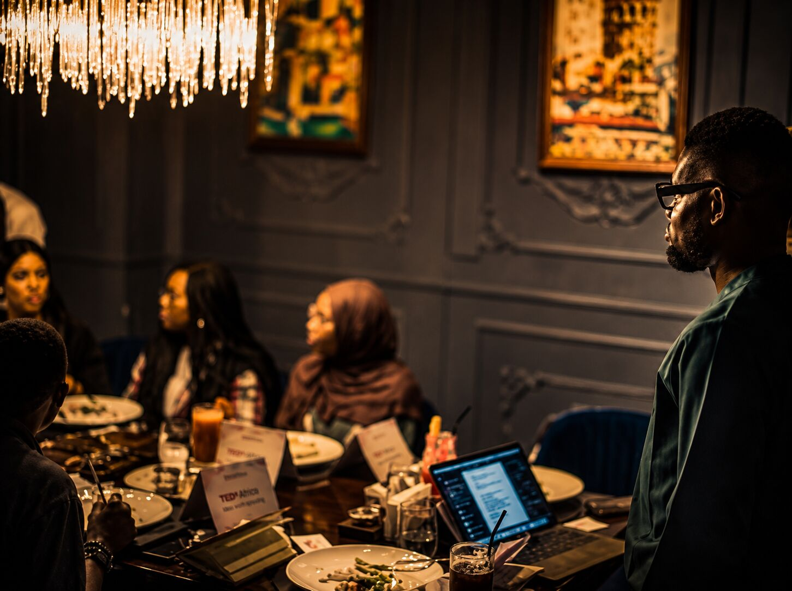
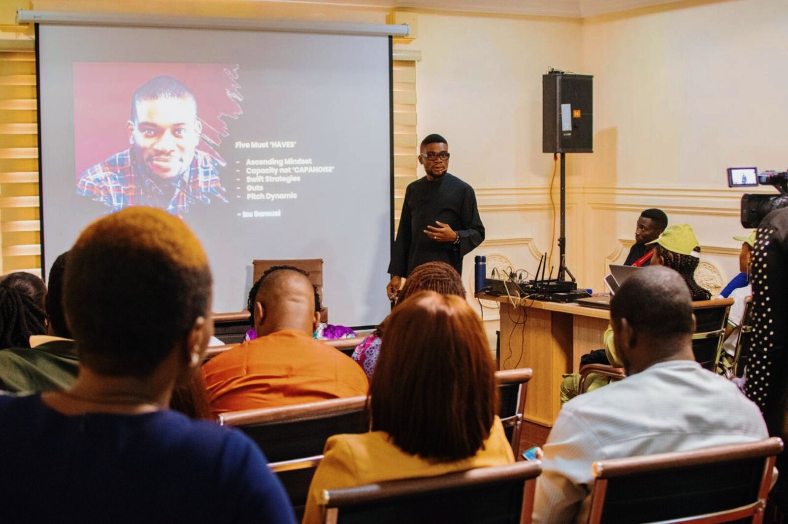

Project TEDxAfrica is an independent, long-term curation and legacy initiative committed to identifying, developing and documenting significant ideas, voices and stories connected to Africa.
Through Story, Identity and Legacy, we create opportunities for African and international voices to engage, exchange perspectives and build relationships capable of creating enduring impact.
Project TEDxAfrica brings together a carefully curated community of leaders, professionals, thinkers and changemakers through cultural exchange, leadership engagement, professional development and meaningful global connection.
Our work extends beyond any single stage or event. We are building an enduring ecosystem around ideas, relationships and stories worth documenting.

Influence is rarely measured by the size of an audience. It is measured by the ideas that endure and the relationships that continue to create value over time. Project TEDxAfrica is intentionally limited to 100 Legacy Voices, a curated community of exceptional professionals selected for the quality of their thinking, the credibility of their work, and their capacity to shape meaningful conversations across industries, institutions, and generations.
Our long-term vision is to identify and document 100 significant voices, ideas and stories over the next decade, creating an enduring body of work for future generations.
Through Project TEDxAfrica's independent documentation, storytelling and legacy initiatives, we are building an archive of significant voices and ideas designed to remain relevant beyond the moment in which they were first shared.
Project TEDxAfrica is designed to create influence that compounds over time. The stage introduces your ideas. The platform helps extend their reach through relationships, collaboration, and continued engagement.
Every great leader is first a storyteller. Not in the sense of fiction or manipulation, but in the fundamental sense that human beings are moved by narrative — and that narrative is the only vehicle capable of transporting complex ideas across cultures, languages, and generations.
At Project TEDxAfrica, we spend significant time helping each speaker locate the precise story that makes their idea undeniable. Not the biggest story. Not the most dramatic. The truest one.
The greatest threat to African leadership on the global stage is not lack of talent or ideas — it is the subtle pressure to sanitize one's context for the comfort of international audiences.
We reject that premise entirely. Our speakers are prepared to carry the full weight of their cultural, historical, and geo-political identity — without apology, without dilution, and without the performance of neutrality that diminishes rather than elevates.
Ideas become legacy when they are documented, preserved and carried forward. Our responsibility is to ensure that significant voices and perspectives are not lost to the moment, but become part of an enduring body of work for generations to come.
By 2040, Africa will hold the world's largest working-age population. The productivity, consumption, and innovation capacity of that demographic will shape global economic trajectories irreversibly.
The continent holds a disproportionate share of the world's critical minerals — the essential inputs for every green energy transition, every electric vehicle, every semiconductor pathway. Africa's resource decisions are, increasingly, the world's resource decisions.
Solutions built for African complexity — resource constraints, infrastructure gaps, multilingual societies — are often the most elegant and exportable solutions in the world. African innovation is not a catch-up story. It is a lead story.

Project TEDxAfrica is an independent initiative and is not itself a licensed TEDx event.
For the 2026 edition, Project TEDxAfrica is collaborating with TEDxKubwa, an independently organised TEDx event operating under its TEDx licence.